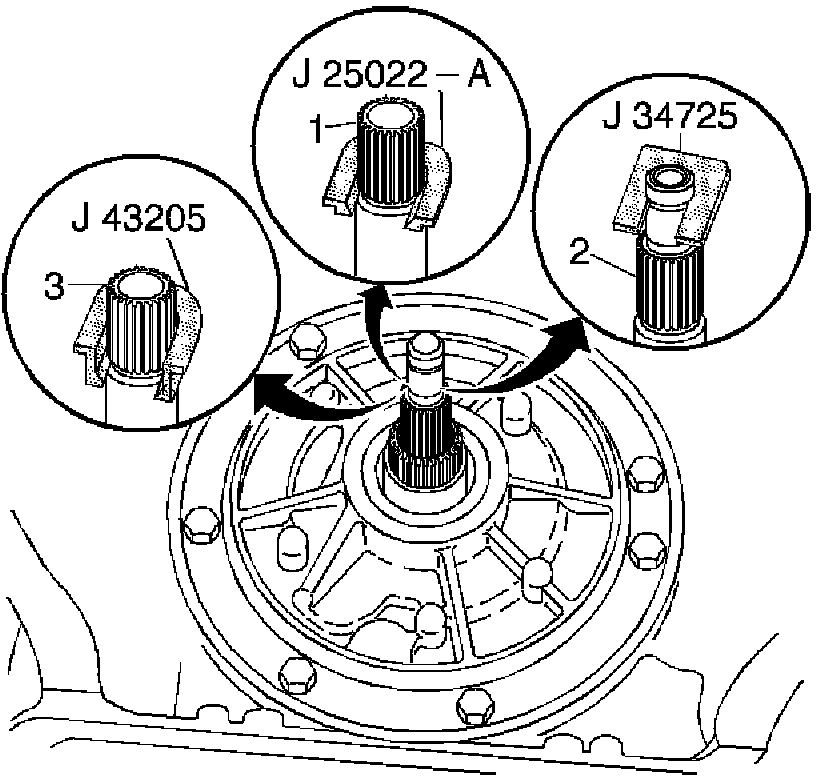
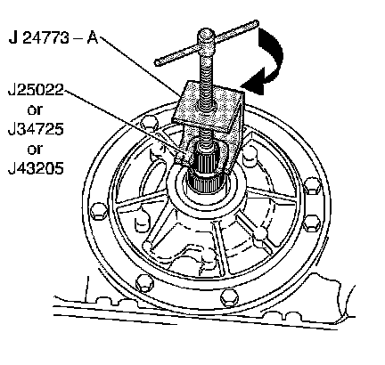
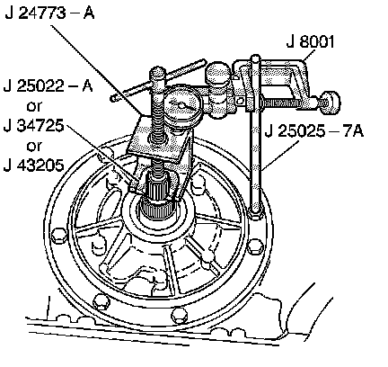
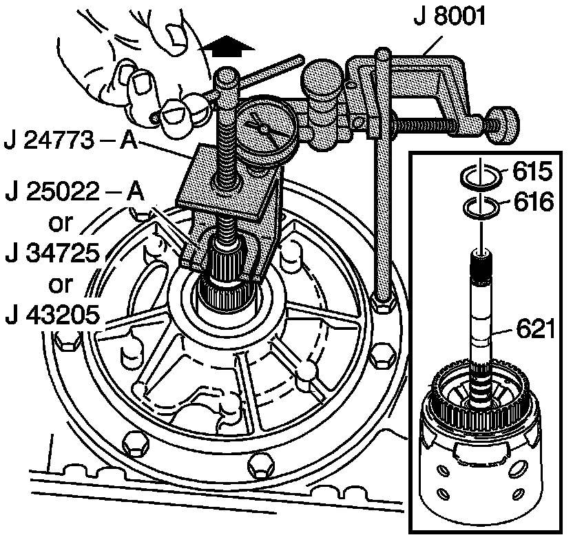

Transmission End Play Check
Transmission End Play Check
Tools Required
^ J 25022 End Play Fixture Adapter
^ J 34725 End Play Checking Adapter
^ J 43205 End Play Fixture Adapter (300 mm)
^ J 24773-A Oil Pump Remover
^ J 8001 Dial Indicator Set
^ J 25025-7A Dial Indicator Post

Important: Torque converter size is model dependent.
1. Install an end play fixture adapter.
^ Use J 25022 for a 245 mm and 258 mm turbine shaft (1).
^ Use J 34725 for a 298 mm turbine shaft (2).
^ Use J 43205 for a 300 mm turbine shaft (3).

2. Install the J 24773-A.

3. Remove an oil pump bolt.
4. Install J 25025-7A (or a 278 mm or 11 in bolt) and lock nut.
5. Install J 8001.

6. Set the J 8001 to zero.
7. Pull up on J 24773-A.
Proper end play should be 0.13-0.92 mm (0.005-0.036 in).
8. The selective washer (616), which controls the end play, is located between the input housing (621) and the thrust bearing (615) on the oil pump hub.
If the end play measurement is incorrect, refer to the table End Play Specifications. Choose a new selective washer (616) based on the original selective washer and the information contained in the table.
If the dial indicator shows no end play, the selective washer (616) and thrust bearing (615) may have been misassembled.
9. Correct the end play by changing the selective washer (616).